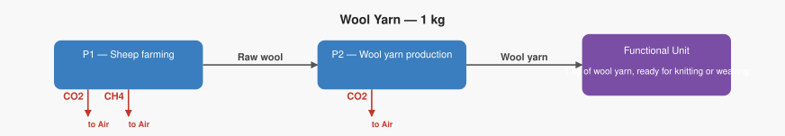

/life-cycle-stages wool_yarn
Skill version: 0.1 Student: elena Model: sonnet-4-6 Date: 2026-06-14
AI: Here is a quick question before we look at any LCA numbers.
Imagine two friends both track their spending for a month. One tracks everything — rent, food, transport, nights out, the lot. The other only tracks their grocery bills. At the end of the month, who spent less?
The one who only tracked groceries — obviously. But is that a fair comparison?
Student: no it’s not fair
AI: Exactly — they were measuring different things. One covered the full picture, the other covered only a slice of it. The grocery number is not wrong, but you cannot compare it to the full-spending number and draw any conclusion about who is better at managing money.
In LCA, the same problem comes up constantly. Researchers have agreed on four standard ways to draw the fence — four named boundary types that describe where a study starts and where it stops. These are called life cycle stages (meaning: the named phases of a product’s life that a study can choose to include or exclude).
Knowing which stage a study covers is the first thing to check before you trust any footprint number — because the same product will get a completely different result depending on which stages are inside the fence.
Let’s go through all four using wool yarn as our example. Here is the first one:
Cradle to gate — this boundary starts at the very beginning of the supply chain, where the raw material comes from (the “cradle”) and stops at the factory exit (the “gate”). For wool yarn, that means the study covers the sheep farm and the yarn production mill — and nothing else. What happens to the yarn after it leaves the mill is outside the fence.
Before I go on — why do you think most supplier sustainability reports use cradle to gate rather than a wider boundary?
Student: because they can only control what happens on their side
AI: Exactly right — and that is a really important insight.
A wool yarn supplier controls the sheep farm and the mill. They have no control over what a fashion brand does with the yarn after they buy it — whether they knit it into a jumper, how that jumper gets washed, or where it ends up at the end of its life. It would not be fair to hold them responsible for impacts they cannot influence.
Now the other three boundary types, quickly:
Cradle to grave — starts at the same place as cradle to gate (the sheep farm) but continues all the way through to the very end of the product’s life. For a wool jumper made from this yarn, that would add the garment factory, the customer wearing and washing it for years, and eventually donating or disposing of it. This gives the most complete picture but requires estimates about consumer behaviour that can be hard to get right.
Cradle to cradle — the same as cradle to grave, but instead of ending at a bin, the end-of-life material loops back into production as recycled input. For wool, this could mean old garments being collected, shredded, and re-spun into new yarn — completing the circle.
Gate to grave — the opposite of cradle to gate. It starts at the warehouse or retail store and covers only what happens after purchase: the customer using the product and eventually disposing of it. All the production upstream is left out.
Here is the wool yarn supply chain diagram:
../../skills_references/wool_yarn/product_graph_structure.svg
{kind=link}
The two boxes shown — sheep farming and yarn production — are everything this study included. Based on the four boundary types we just covered, which one does this diagram represent?
Student: cradle to gate
AI: Correct — and you can see exactly why just by looking at the diagram. The study starts at the sheep farm (the cradle) and ends when the finished yarn leaves the mill (the gate). Nothing after that point appears in the diagram, which means nothing after that point was counted.
Here is the what-if question: if a garment brand bought this wool yarn and wanted to do a cradle-to-grave study of the finished jumper — including the customer wearing it, hand-washing it, and eventually donating it to a charity shop — what extra steps would they need to add inside the fence that are not shown in that diagram?
Student: the garment factory, washing at home, and disposing of it
AI: Perfect — that is exactly the three things that would need to be added, and in the right order too.
This is the key insight the whole skill has been building toward: the same wool yarn has a different footprint number depending on which boundary you use. The cradle-to-gate number only reflects the farm and the mill. The cradle-to-grave number adds the garment factory, decades of home washing, and end-of-life disposal — and for a wool jumper that gets washed regularly over many years, that additional impact is not small.
This is why, when a supplier hands you a footprint number, the first question to ask is not “is that number high or low?” — it is “which boundary does that number cover?” A cradle-to-gate number and a cradle-to-grave number for the same product are not comparable, even if they are sitting side by side on the same page.
Would you like to move on to goal and scope — the full set of opening decisions every LCA study makes, of which boundary type is just one part? Or is there anything about the four boundary types you would like to look at more closely?